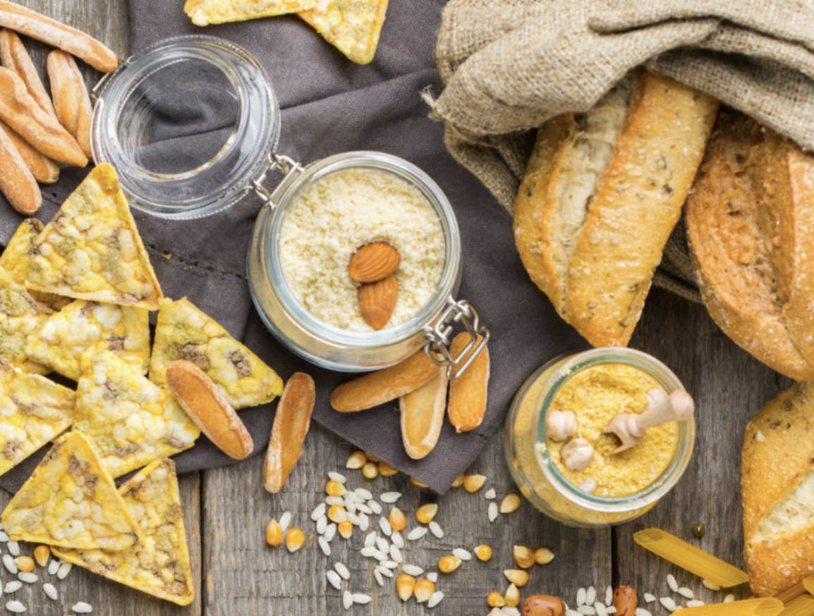
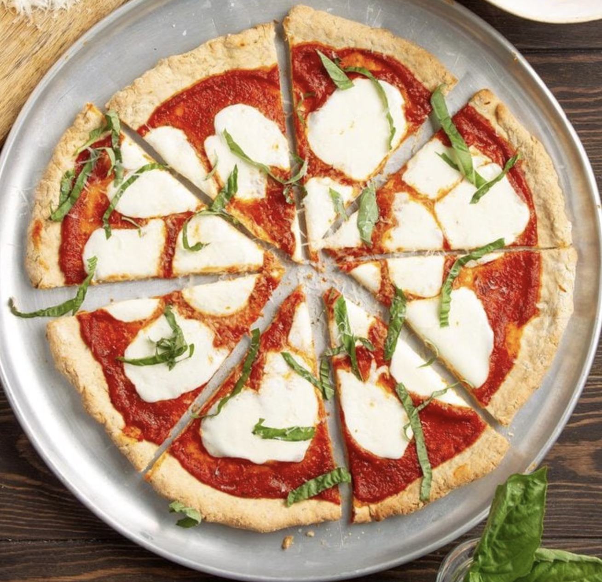
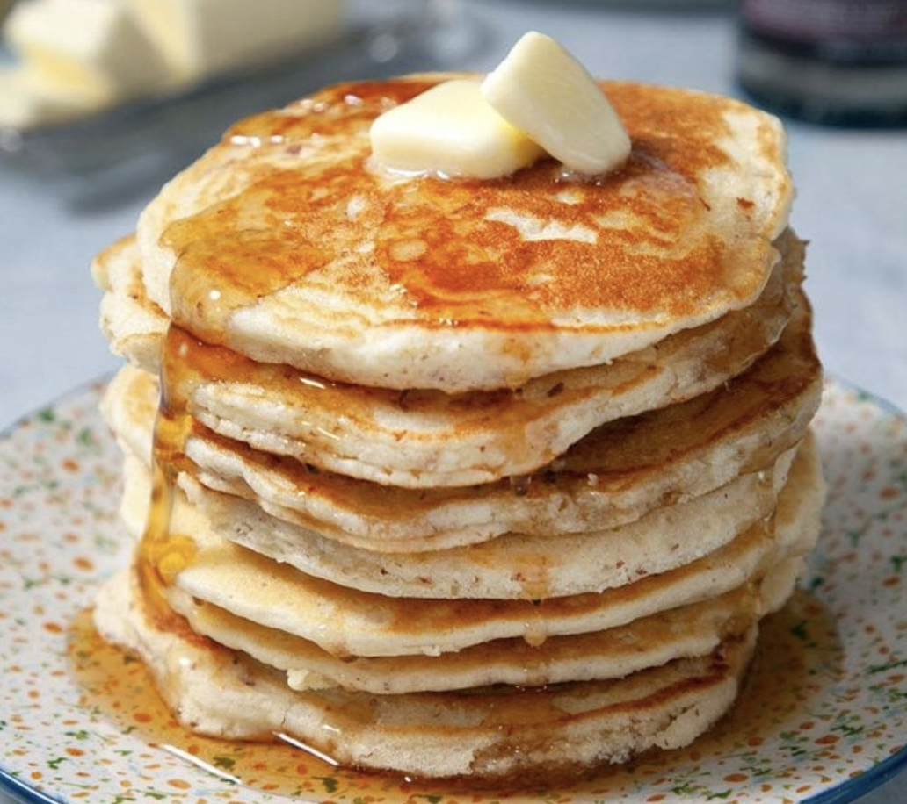
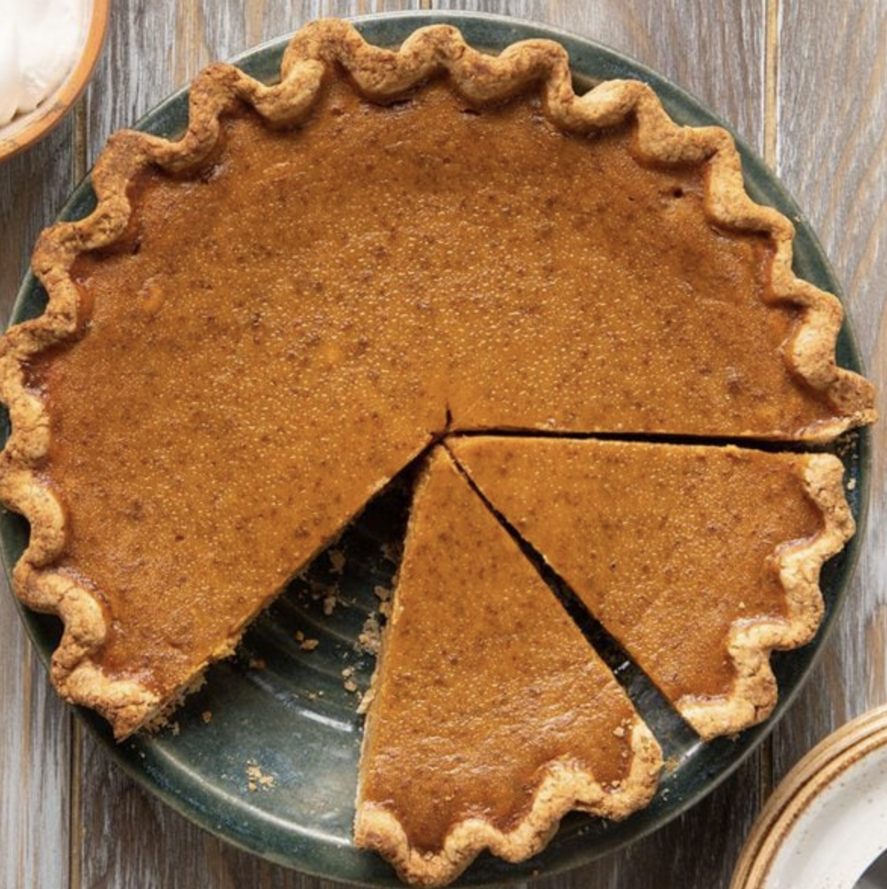

Gluten Free

Gluten-free living has become a lifestyle choice embraced by millions around the world. Whether due to celiac disease, gluten sensitivity, or a desire for a healthier diet, going gluten-free means avoiding wheat, barley, rye, and their derivatives. This dietary shift opens up a world of delicious possibilities, from naturally gluten-free grains like rice and quinoa to an array of gluten-free products and recipes. Discover a thriving community dedicated to enjoying gluten-free living, where flavor and health come together in a way that's inclusive and satisfying for all.
Elanaspantry is a New York Times Bestselling author and the founder of Elana’s Pantry.

GF Pizza
GF Pancakes
GF Pumpkin Pie